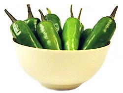

We bring you a rich heritage of the finest spices from all over the world. From the spicy ginger root of the Far East to the unique red chilies of Argentina, Outlander provides a complete range of the best spices and blends. We deliver the finest imported and domestic spices, all freshly ground in small batches to retain their original flavor.
For years we've been involved in food service and manufacturing where the finished product must be consistent week in and week out. We buy our spices from premier importers, and we guarantee that you won't find better quality, flavor, and freshness anywhere. Our spices are also less expensive than those found in most retail stores.
Why Buy Outlander Spices?
- All our spices are guaranteed fresh upon arrival
- All our products are certified organic
- Professional packaging and shipping
- Competitive pricing
- Outlander Club™ benefits
Try our unique blends
Our spice blends are carefully prepared from authentic family recipes unique to geographic regions around the world. We're confident you'll find that everything you prepare using Outlander spices will be more flavorful and more enjoyable.